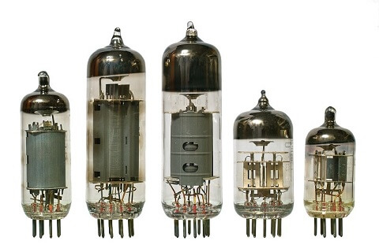

Les ordinateurs
Konrad Zuse, ingénieur allemand et pionnié de l'électronique, est considéré comme le premier inventeur de l'ordinateur. Chapeau l'artiste.
En 1936, il créait le Zuse 1 (Z1), l'ancêtre éléctromécanique des ordinateurs modernes. Il est composé d'une mémoire à logique binaire qui fonctionne très bien. Cependant, son calculateur l'est moins ce qui fut corrigé dans ses prochains projet à savoir le Zuse Z3. Bien que très imposant (1 tonne) pour peu de performances comparées à notre époque, c'est une technologie très avancée et révolutionnaire dans l'électronique. En effet, le Zuse Z1 est le premier ordinateur à programmation externe binaire ce qui permettait pour la première fois d'exécuter des calculs automatiquement et à vitesse raisonnable.
Les programmes étaient stockés sous forme de bandes perforées ce qui n'est pas le plus pratique mais assez pour pouvoir l'utiliser. Pour les exécuter, on les insérait dans le Zuse Z1 puis il lisait les instructions indiquées par les troues dans la carte dans l'ordre (inpensable aujourd'hui étant donnée qu'on a découvert le parallèlisme). Toutefois, il comportait pas mal de défaut étant donnée qu'il était fait à la main dans l'appartemment de Konrad. Il reposait en partie sur la mécanique ce qui était un frein pour la rapidité des calculs.
Le principal problème du Zuse Z1 est la mécanique. Alors comment y remédier ?
Pendant la seconde guerre mondiale, en 1944, les britanniques Tommy Flowers et Max Newman ont été chargé de créer une machine permettant de décrypter des messages à vitesse raisonnable. Ils ont nommé ce projet Colossus.

Le Colossus est une technologie très novatrice dans l'électronique étant donnée qu'elle utilise à grande échelle les tubes à vide (plus de 1500). En effet, son utilisation est essentielle dans la conception de cette machine. Les tubes à vide, déjà existant à la fin du XIXème siècles notamment utilisés par les radios, trouvent plusieurs utilisations dans le Colossus :
-L'amplification des signaux éléctriques afin de s'assurer de leur bonne conduite dans le circuit grâce à son accelération générée par la cathode et la nanode.
-On les utilisait également pour les fonctions logiques. Les tubes à vide ont deux état possibles : Actif dans lequel le courant passe et inactif dans lequel le courant ne passe pas. La représentation des fonctions logiques telles que le ET, le OU ou encore le NON est donc possible.
L'utilisation des fonctions logiques est essentielle dans la cryptanalyse automatisée afin de déterminer des chemins probables pour décrypter des messages en peu de temps plutôt que de tester toute les combinaisons possibles (brute-force) et donc de consommer beaucoup plus d'énergie.

Le Colossus utilise également un signal d'horloge qui permet de synchroniser les opérations dans tout le circuit dans le but de garantir le bon ordre d'exécution et éviter les erreurs. Il était cadencé à 5kHz ce qui signifie qu'il pouvait faire 5000 opérations par seconde ce qui n'est absolument pas négligeable à cette époque.
Le Colossus est une machine spécifique à la cryptanalyse. Qu'en est-il pour les machines à plusieurs utilisations ?
En 1945 apparait l'ENIAC, le premier ordinateurs presque totalement électronique et à programmation externe conçut pour une utilisation plus globale.

Tout comme le Colossus, il utilise un grand nombre de tubes à vide (plus de 17 000) afin d'exécuter des opérations logique. De plus, il est conçu avec des circuits éléctrique et des compteurs ce qui permettait l'exécution d'opérations arithmétiques telles que les boucles. Ces circuits pouvaient également faire des opérations de comparaison ce qui était révolutionnaire étant donnée qu'il l'appliquer à grande échelle.
L'ENIAC pouvait également faire des opérations mathématiques très rapidement grâce notamment à son architecture qui permettait de faire des opérations en parallèle, contrairement au Colossus. Certaine technique de calcul rapide étaient mises en pratique tel que le décalage des bits en binaire qui permettait de faire des multiplications ou divisions par des multiples de 2 comme le font les opcodes SHR, SHL, SAL ou SAR en assembleur aujourd'hui.
L'exécution des programmes se faisait pour l'entrée de façon physique. On utilisait des tableaux de câblages afin de déterminer les opérations à effectuer et donc pour définir les programmes. C'était un processus assez long et qui ne devait pas comporter d'erreur pour le bon fonctionnement du programmes. D'ailleurs, l'ENIAC est également connu pour avoir été l'origine du mot "bug" lorsqu'une programmeuse du projet a trouvé un insecte qui causé un problème dans l'exécution de la machine.
L'exécution de programmes externes c'est bien au début, mais fastidieux. Quelles sont les autres moyens de lancer des instructions ?
Pour avancer, il faut parfois revenir en arrière et revoir toute la structure. C'est ce qu'a fait John Von Neumann, grand mathématicien, informaticien et physicien. Au début des années 1940, il conçoit le projet EDVAC avec plusieurs autres informaticiens qui vise à mettre en oeuvre une nouvelle architecture d'ordinateur. La structure de Von Neumann, publié en 1945, est une des plus grandes révolutions de l'électronique et de l'informatique et est toujours utilisée dans les ordinateurs modernes. Elle définit les éléments que devrait composer un ordinateur.
Il y a d'abord le CPU (Central Processing Unit) qui est le composant qui gère l'exécution des instructions. Il est divisé en deux partie :
-L'unité de processus : Elle traite les opérations logiques et arithmétiques telles que les additions, les multiplications, les OU logiques ou encore les ET logiques. Ces opérations sont appelées ALU (pour arithmetic and logic unit). Il contient également des registres. Ces registres sont indispensables à l'exécution car ils stockent les instructions et les données nécessaires à l'exécution.
-L'unité de contrôle : Elle contrôle l'exécution des instructions. Elle récupère les instructions qui se trouve dans mémoire et les envoie vers l'unité de processus. Elle cadence l'exécution des opérations grâce aux cycles d'horloges. Elle contient aussi du stockage qui garde une trace de l'état de l'exécution comme par exemple le PC (Program Counter) qui garde l'adresse mémoire de la prochaine instructions à exécuter. On pourrait le voir comme étant le registre RIP aujourd'hui.
On a également la mémoire, qui était le coeur du problème des machines à programmes externe. En effet, Von Neumann a introduit le concept de mémoire dans son architecture ce qui permettait de stocker des données.
Toute cette conception va prendre de la valeur au moment de l'invention des transistors.
En effet, en 1947, William Shockley, Walter Brattain et John Bardeen ont conçu le transistor qui a permis de remplacer les tubes à vides qui étaient peu fiables, trop gros et peu performants. Cette invention à révolutionner l'électronique grâce sa taille minuscule (en nanomètre aujourd'hui), et sa fiabilité.
Le transistor à la même fonction que les tubes à vides : il permet d'amplifier les signaux éléctriques, contrôler le flux életrique d'un circuit et peut être sous l'état actif (laisse passer le courant) et inactif (ne laisse pas passer le courant). Il est fait de silicium, contient deux broches entrée et sortie et une troisième afin de contrôle son état.
Grâce à ces transistors, l'invention des circuits intégrés devient évidente pour Jack Kilby en 1958. Les circuits intégrés sont des éléments élétroniques très petits comptant un certain nombre de transistor, de diode ou encore de résistances. Ils permettent la réalisation de mémoire, d'opérations logiques et arithmétiques, pile ce qu'on a besoin pour mettre en pratique l'architecture de Von Neumann. On a donc trouvé comment faire notre CPU.
Les circuits intégrés vont donc constituer des microprocesseurs.

En 1971, le premier microprocesseur Intel 4004 est commercialisé. Il est composé d'un seul circuit intégré avec des performances impressionante (calcul sur des nombres à 4 bits) pour sa taille bien que moins puissant que les processeurs de la même époque.
En 1974 arrive le microprocesseur Intel 8080 qui, lui, permet de faire des calculs sur des nombres à 8 bits. Le Zilog Z80 sort la même année et sera un des plus utilisé pour les usages grands publics dans les 15 années à venir. Viendra ensuite l'ère des 16 bits menée par l'Intel 8088 en 1979 et celle des 32 bits en 1985 avec l'Intel 80386. Ces inventions marquent le début de la commercialisation de l'ordinateur au grand public. En effet, la taille n'est bientôt plus un inconvéniant et ne sera plus réservé aux usages scientifiques ou militaire.
Les familles voudront donc s'en offrir pour leur propre usages personels au début d'Internet. En 1981, le ZX81 est commercialisé. Il est l'un des premier ordinateurs à usage personnel et est vendu à plus d'un millions d'exemplaire. Son succès est l'un des facteurs de celui des jeux vidéos notamment grâce à son prix relativement faible et sa disponibilité. Un an plus tard sort le Commodore 64 qui est encore à ce jour l'ordinateur le plus vendu au monde avec entre 17 et 25 millions de ventes. Pour pouvoir l'utiliser à son plein potentiel, l'usage de l'assembleur était nécessaire afin de pouvoir mettre en oeuvre des projets d'application et de jeux vidéos.
| Nom | Fréquence d'horloge | Capacité de calcul | Capacité mémoire | Taille |
|---|---|---|---|---|
| Zuse Z1 | 1 Hz | additions, soustractions | 16 words | ~2m de long, 1 tonne |
| Colossus | 5 kHz | arithmétique, logique, comparaison | Pas de mémoire | Une salle entière |
| ENIAC | 100 kHz | Vaste opérations mathématiques | ~1500 instructions | 139m² pour 30 tonnes |
| ZX81 | 3.25 MHz | Vaste opérations mathématiques | Quelques Kilo-Octet | Quelques dizaine de centimètre pour 350g |
| Commodore-64 | 1 MHz | Vaste opérations mathématiques | 64 Kilo-octets | Taille d'un gros clavier |